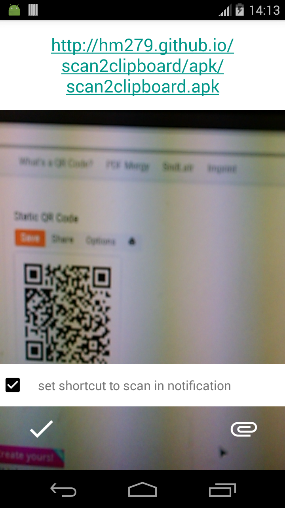
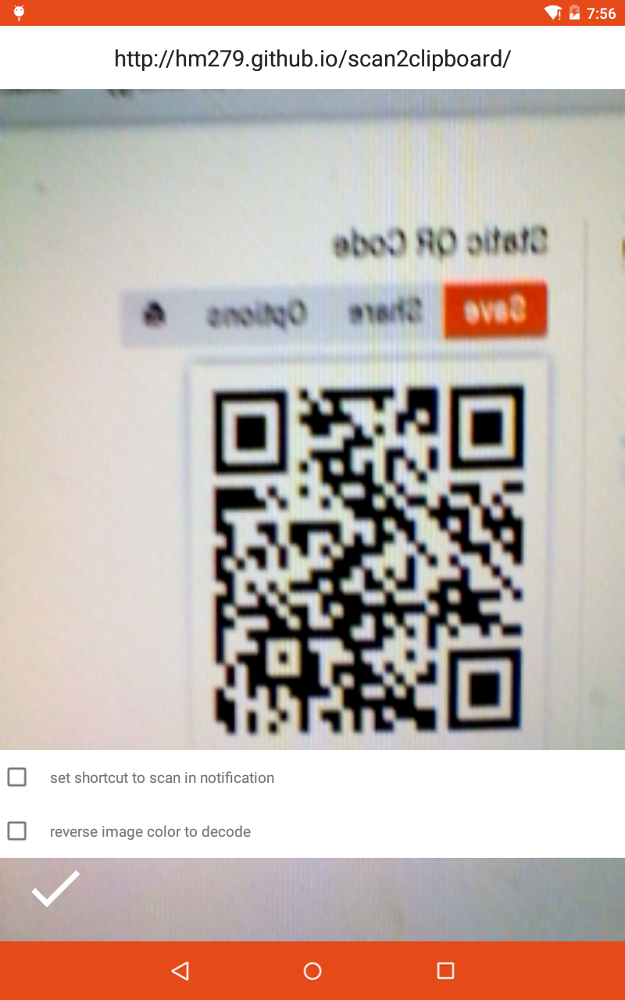
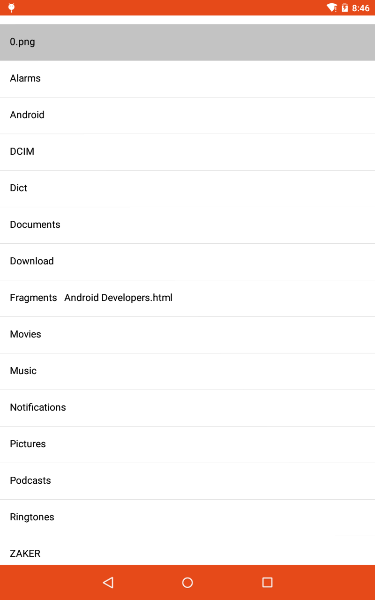

scan2clipboard
A simple android project that scan bar code and copy to clipboard using ZBar lib.
2015-05-19 update: add autoLink="web" to scan result. If the result is web url, you can click to open it on web explorer.

Touch blank space to restart scanning bar code.

You can also scan bar code from local image file
